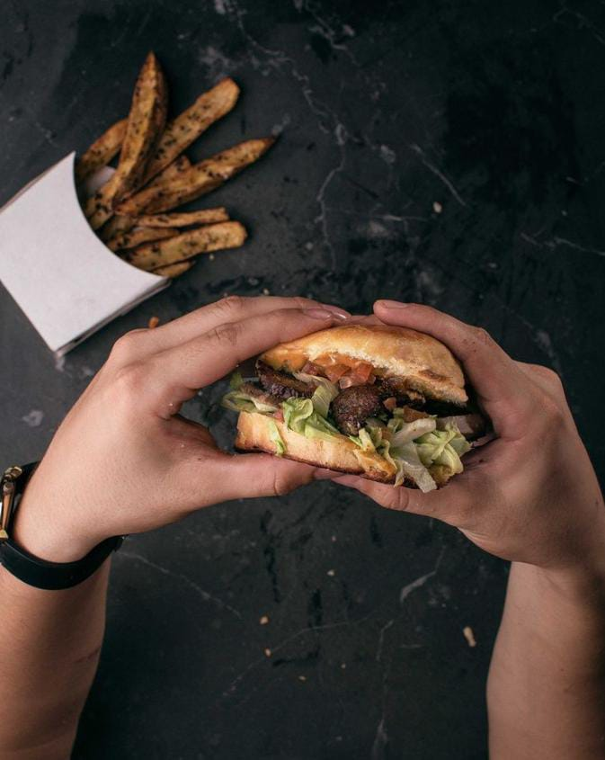

Nuestra Historia
Conocenos!
Creado desde 2020, Om Ahumados es una pequeña empresa familiar que se dedica a llenar la panza de los rosarinos. Trabajamos con los mejores productos y más frescos del mercado, listo para servirlo en tu mesa y disfrutar con los que más queres. A raiz de la pandemia de Covid-19 que asotó a todo el mundo, desde Om Ahumados decidimos que era hora de lanzarnos y apostar por una nueva tecnica de asar nuestras deliciosas carnes argentinas, proponiendo una nueva forma de comer, un nuevo estilo, nuestro estilo.